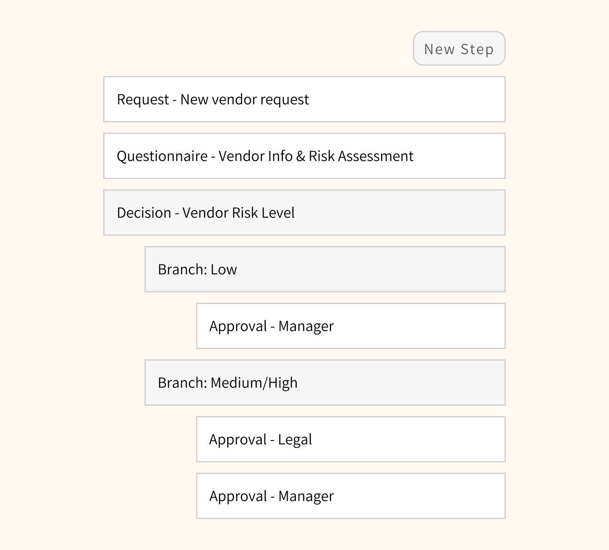

LogicManager is an enterprise risk management SaaS tool and workflows is a feature used for automating repetitive processes.
Use case
Common use case for workflows is onboarding a new vendor.
For example, pretend some design team wants to switch to Figma. To do so, their manager would create a new vendor request in LM which would then start a "New Vendor" workflow.
Why redesign?
Workflows used to be very difficult to create, edit, and understand at glance. This is how the above-mentioned "New Vendor" workflow used to look like:
The more complex workflows got, the harder they were to read
Proposed solution
The ideal design solution was obvious - workflows should look and behave like a flowchart. This will make them easier to manage and will mirror similar functionality found in other apps.
However, selling and proceeding with that solution got more complicated. It raised several questions:
How feasible is the solition?
We never had a project like this before. How do we estimate for it? How do we implement it, from scratch or with a library? If it turns out to be a huge investment, is it even worth it and should it be prioritized over other stuff?
How do we make the transition to new UI easier for existing customers?
Yes, new UI would obviously be better. But many of our existing customers don’t care. They already invested time into learning the old workflow builder and have been using it for years.
What functionality should be included in the new version of workflows?
Is there existing workflow functionality that’s not used and only takes space? Are there any enhancements that we want to incorporate into the new builder? And, is there any functionality that we would want to add down the line and make
sure that the new design would accommodate?
How should it... actually be designed?
[Insert tons of tiny design decisions here]. For example, should we color code distinct node types? Should we create a color system to make sure that use of color remains consistent in the future, when used in different app modules?
How will I create components in Figma?
I had to figure out how to design components in Figma that would allow me to create complex workflow variations. This was way before sleek FigJam diagrams! Here’s a kit with components I ended up creating.
Process
To find answers to above we spent several weeks talking with customers, company's analysts, developers, and testing multiple prototypes. It looked something like this:
In the end, we proceeded with the new design and implemented it using vx library. We also cut out a lot of unnecessary functionality and optimized the designs for future enhancements (which we successfully implemented several months later!).
Here's an example of the "New Vendor" workflow in the context of the app:
And here's a mini recreated version of it so that you can get a better feel:
Request
New Vendor Request - Figma
QUESTIONNAIRE
Vendor Info & Risk Assessment
APPROVAL
Manager Approval
Retrospective
Overall it was a success. Customers loved new builder and appreciated that we asked for their opinion during the redesign. New workflows also helped us get some deals:
However, there was still tons of room for improvement! Here's what we would have done differently if we did it again:
Tested and accounted for more edge cases / very big workflows.
We underestimated the size of an average workflow, which led to slow loading times (and even some freezes) during the initial release. We also didn’t account for some common edge cases which resulted in spacing issues and made workflows
hard
to navigate.
Done more thorough implementation research with developers.
In addition to talking with developers about feasibility of designs and what would be simpler to implement, we should have also settled on implementation and tried a small proof of concept. This would have prevented rework during the
development phase. As an example - I created all node components in html because we expected that’s how it would be implemented. However, the library we ended up going with used svg’s which meant I needed to rewrite components.
Took it slower at the end.
I wish we took a little bit time at the end to clean up code and polish the components visually, instead of rushing to the next feature. To me, that’s the definition of being “done”, not when just simply works.
{kind=link}